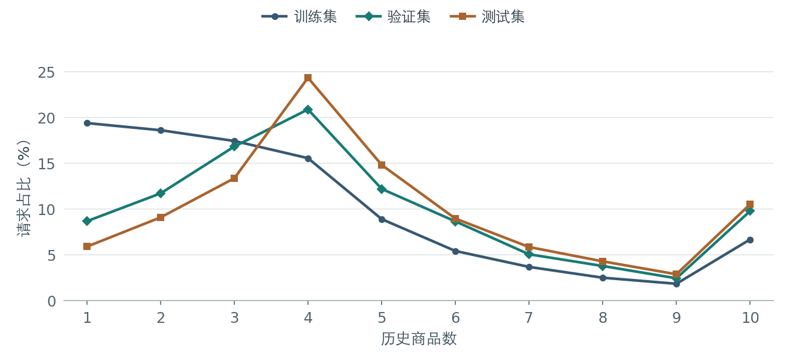
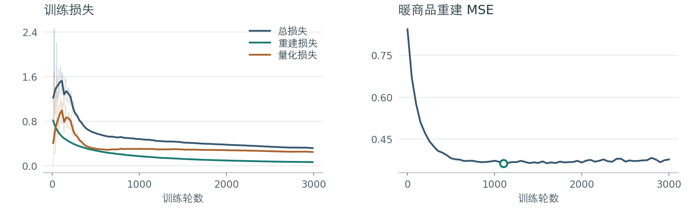
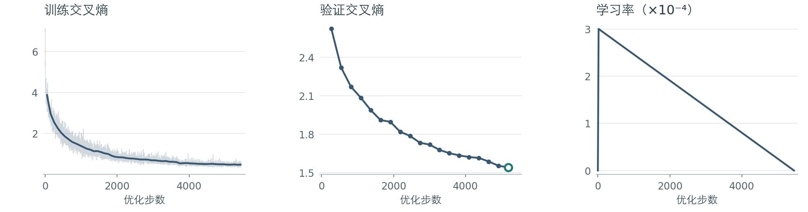
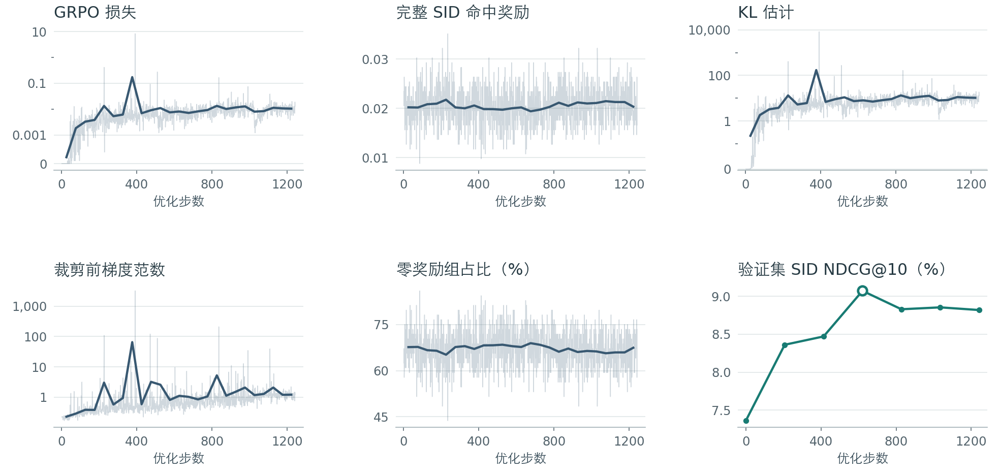
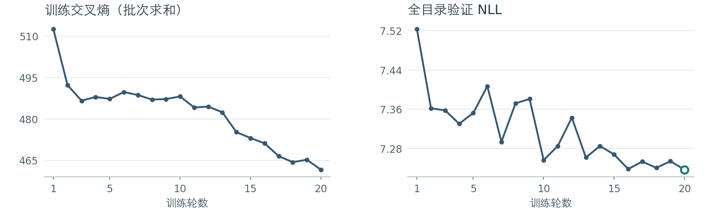

数据准备与训练样本
工业品数据覆盖 7,694 位用户、3,686 件商品和 45,324 条交互请求。每条请求以最近 1–10 件历史商品预测下一件商品。重训沿用原切分、请求顺序和商品 ID，并根据 RQ-VAE 目录更新历史与目标的 SID。
| 用途 | 条数 |
|---|---|
| 训练交互 | 36,259 |
| 验证请求 | 4,532 |
| 测试请求 | 4,533 |
| 其中，目标为冷商品的测试请求 | 147 |

只有一件历史商品的请求占训练集的 19.4%。验证集与测试集均以四件历史商品为峰值，分别占各自请求数的 20.9% 和 24.4%。
从交互请求到训练任务
同一条交互可按不同输入和目标构成多条训练样本。SFT 使用标题与 SID 互译和下一商品预测任务。GRPO 以真实 SID 计算奖励，历史标题任务抽取 10,000 条，历史 SID 任务使用全部 36,259 条训练交互。
| 训练任务 | SFT 训练样本 | GRPO 训练样本 |
|---|---|---|
| 历史 SID → 下一商品 SID | 36,259 | 36,259 |
| 历史 SID → 下一商品标题 | 36,259 | — |
| 商品 SID → 商品标题 | 3,686 | — |
| 商品标题 → 商品 SID | 3,646 | 3,646 |
| 历史标题 → 下一商品 SID | 36,259 | 10,000 |
| 商品描述 → 商品 SID | — | 2,870 |
| 合计 | 116,109 | 52,775 |
RQ-VAE 训练与语义 ID 导出
3,280 件暖商品用于拟合中心化均值和三级量化器，另用 367 件暖商品的重建误差选择检查点。每个码本含 256 个 32 维向量。训练使用 AdamW，预热 50 轮后学习率为 0.001。39 件冷商品在量化器冻结后编码。
重建损失与量化损失
总损失将商品向量的重建 MSE 与三级量化损失的均值相加，量化项权重 λ 取 1。
每一级用输入残差 r 和选中码向量 c 计算两项误差。第一项更新码本，第二项使编码器残差靠近选中的码，权重 β 取 0.25。sg 表示停止梯度，x 表示中心化商品向量。
验证选点与全目录编码

暖商品验证 MSE 在第 1,100 轮降到最低的 0.36312。第 3,000 轮触发早停时，训练重建 MSE 已降至 0.06809，暖商品验证 MSE 却回升到 0.37720，因此采用第 1,100 轮权重。训练耗时 51.41 秒。
直接选择最近的码时，3,686 件商品只得到 3,065 个不同 SID。保留前两位并重新匹配冲突商品的第三位后，所有商品都有唯一 SID。暖商品验证 MSE 随之升至 0.36756，比匹配前高 1.22%。
Qwen 监督微调
从 Qwen2.5-0.5B 初始化，并在词表中加入 547 个原子 SID token。训练 3 轮，全局批量为 64，最大序列长度为 512 token。学习率在前 20 步预热至 0.0003，随后线性衰减。
答案 token 交叉熵
模型根据提示 h 和真实答案前缀预测下一个答案 token。掩码 m 在有效答案位置取 1，在提示与填充位置取 0。训练损失取所有有效答案 token 的负对数概率均值。

微调前的验证交叉熵为 14.0991。第 5,187 步的验证损失最低，为 1.5413。训练在第 5,445 步完成三轮，耗时 32.59 分钟。GRPO 使用第 5,187 步的权重初始化。
GRPO 强化学习
策略模型与参考模型都从选中的 SFT 权重开始。每个提示用受约束的 beam search 生成 16 个合法 SID，完整命中得 1 分。只要组内有命中，错误候选就按名次获得归一化的负折扣。全组未命中时，组内奖励均为零。每 512 步按 0.6 的系数将策略权重混入参考模型。
组内优势与 KL 惩罚
用同一提示下的奖励均值和样本标准差计算候选优势 A。记参考模型与策略模型的 token 对数概率之差为 δ，由此估计每个有效生成 token 的 KL 惩罚。
记策略模型的 token 对数概率为 z，sg 表示停止梯度。损失先在每个候选的有效生成位置上求均值，再对 N 个候选求均值，KL 项权重 β 取 0.001。
训练诊断与验证排名

验证 SID NDCG@10 从训练前的 7.362% 提高至第 621 步的 9.071%。随后连续三次验证均未超过该值，训练在第 1,242 步早停，耗时 80.74 分钟。
第 391 步的 KL 达到峰值 8,199.87，同时裁剪前梯度范数升至 3,194.85。末 100 步的平均 KL 为 10.428，零奖励候选组占 66.688%。这些组的策略优势为零，KL 项仍参与更新。
UniSRec 训练与向量导出
历史序列编码器输出归一化的 300 维查询向量，商品适配器输出同维度的归一化商品向量。训练批量为 512，学习率预热 5 轮后按余弦曲线调度。
训练目录交叉熵与全目录验证
对批量 B 中的每条请求，将历史向量 q 与各训练商品向量 v 的内积除以温度 0.07，以真实下一商品 y(b) 作为正类计算交叉熵。

从第 1 轮到第 20 轮，全目录验证 NLL 从 7.523539 降至最低的 7.236538。推理导出第 20 轮的历史编码器和 3,686 个商品向量，用于在线草拟候选。
检查点与推理产物
各阶段依据各自的验证目标选择检查点。RQ-VAE 提供商品与 SID 的映射，SFT 权重作为 GRPO 的起点。联合投机推理同时加载 GRPO 策略和独立训练的 UniSRec 检索模型。
| 阶段 | 训练轮数或步数 | 选中权重 | 验证指标 | 选中时的值 |
|---|---|---|---|---|
| RQ-VAE | 3,000 轮 | 第 1,100 轮 | 暖商品重建 MSE | 0.36312 |
| SFT | 5,445 步 | checkpoint-5187 | 答案 token 交叉熵 | 1.5413 |
| GRPO | 1,242 步 | checkpoint-621 | SID NDCG@10 | 9.071% |
| UniSRec | 20 轮 | 第 20 轮 | 全目录 NLL | 7.236538 |